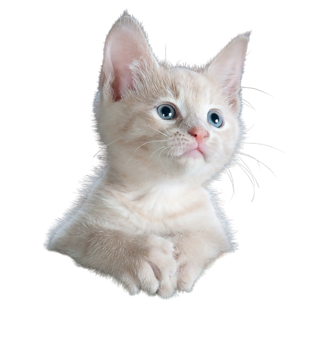

Domestic Cat
Scientific Name: Felis catus
Average length: 46cm
Average Age: 15 years
Fun Facts
Cats have an extra organ that allows them to taste scents and they developed meowing as a way to communicate exclusively with humans.